위험물산업기사 (2009-08-30 기출문제)
1과목: 일반화학
1. 다음 물질 중 비전해질에 해당되는 것은?
- HCl
- HNO3
- C2H5OH
- CH3COOh
(정답률: 52%)

2. 미지농도의 염산 용액 100mL 를 중화하는데 0.2N NaOH용액 250mL가 소모되었다. 이 염산의 농도는 몇 N 인가?
- 0.⑤
- 0.2
- 0.25
- 0.5
(정답률: 67%)
3. 다음 각 화합물 1mol 이 완전연소할 때 3mol 의 산소를 필요로 하는 것은?
- CH3 - CH3
- CH2 = CH2
- C6H6
- CH ≡ CH
(정답률: 80%)
4. 다음 중 커플링(coupling) 반응시 생성되는 작용기는?
- -NH2
- -CH3
- -COOH
- -N = N-
(정답률: 86%)
5. 다음 중 어떤 조건하에서 실제기체가 이상기체에 가깝게 거동하는가?
- 낮은 온도, 높은 압력
- 높은 온도, 낮은 압력
- 낮은 온도, 낮은 압력
- 높은 온도, 높은 압력
(정답률: 69%)
6. “2.3 - dimethy - 1.3 - butadiene"의 화학구조식을 옳게 나타낸 것은?
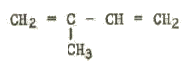
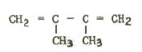
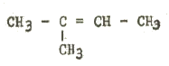
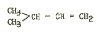
(정답률: 70%)
7. 다음 물질의 상태와 관련된 용어의 설명 중 틀린 것은?
- 삼중점 : 기체, 액체, 고체의 3가지 상이 동시에 존재하는 점
- 임계온도 : 물질이 액화될 수 있는 가장 높은 온도
- 임계압력 : 임계온도에서 기체를 액화하는데 가해야 할 최소한의 압력
- 표준상태 : 각 원소별로 이상적인 결정형태를 이루는 온도 및 압력
(정답률: 57%)
8. 방사능 붕괴의 형태 중
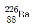
이 α 붕괴할 때 생기는 원소는?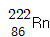
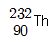
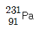
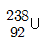
(정답률: 90%)
9. 질산나트륨의 물 100g 에 대한 용해도는 80℃ 에서 148g, 20℃ 에서 88g이다. 80℃의 포화용액 100g 을 70g으로 농축시켜서 20℃로 냉각시키면, 약 몇 g의 질산나트륨이 석출되는가?
- 29.4
- 40.3
- 50.6
- 59.7
(정답률: 47%)
10. 1패러데이(Faraday)의 전기량으로 물을 전기분해 하였을 때 생성되는 기체 중 산소 기체는 0℃, 1기압에서 몇 L인가?
- 5.6
- 11.2
- 22.4
- 44.8
(정답률: 54%)
11. CH4에서 탄소의 혼성 궤도함수에 해당하는 것은?
- s
- sp
- sp2
- sp3
(정답률: 73%)
12. 다음 중 1차 이온화 에너지가 가장 큰 것은?
- He
- Ne
- Ar
- Xe
(정답률: 66%)
13. 15wt%의 식염수 100g을 가열해서 질량이 처음의 2/5로 되었다면 이 때 식염수의 농도는 몇 wt%인가?
- 15.5
- 25.5
- 32.5
- 37.5
(정답률: 42%)
14. 다음 중 산소와 같은 족의 원소가 아닌 것은?
- S
- Se
- Te
- Bi
(정답률: 72%)
15. 다전자 원자에서 에너지 준위의 순서가 옳은 것은?
- 1s < 2s < 3s < 4s < 2p < 3p < 4p
- 1s < 2s < 2p < 3s < 3p < 3d < 4s
- 1s < 2s < 2p < 3s < 3p < 4s < 4p
- 1s < 2s < 2p < 3s < 3p < 4s < 3d
(정답률: 63%)
16. 탄소 3g이 산소 16g 중에서 완전연소 되었다면, 연소한 후 혼합 기체의 부피는 표준상태에서 몇 L가 되는가?
- 5.6
- 6.8
- 11.2
- 22.4m
(정답률: 54%)
17. 100mL 메스플라스크로 10ppm 용액 100mL를 만들려고 한다. 1000ppm 용액 몇 mL를 취해야 하는가?
- 0.1
- 1
- 10
- 100
(정답률: 69%)
18. 어떤 물질의 불꽃반응은 노란색을 나타내며, 이 물질의 수용액에 AgNO3 용액을 넣었더니 흰색침전이 생겼다. 이 물질은 무엇인가?
- NaCl
- BaCl2
- CuSO4
- K2SO4
(정답률: 84%)
19. 에탄올의 탈수로 만들어지는 물질로 물에 잘 녹지 않으며 마취성과 휘발성이 있는 액체는?
- C6H6
- CH3COOH
- C2H5OC2H5
- CH3CHO
(정답률: 52%)
20. 아레니우스의 이론에 의한 산ㆍ염기 정의에 따르면 다음 중 산에 해당하는 물질은?
- 물에 녹아 수소 이온을 내놓는 물질
- 물에 녹아 수소 이온을 받아들이는 물질
- 물에 녹아 색깔이 변하는 물질
- 물과 반응하지 않는 물질
(정답률: 78%)
2과목: 화재예방과 소화방법
21. 다음 중 물분무소화설비가 적응성이 없는 대상물은?
- 전기설비
- 제4류 위험물
- 인화성고체
- 알칼리금속의 과산화물
(정답률: 64%)
22. 칼륨에 대한 설명 중 틀린 것은?
- 보호액을 사용하여 저장한다.
- 가급적 소분하여 저장하는 것이 좋다.
- 화재시 주수소화는 위험하므로 CO2 약제를 사용한다.
- 화재 초기에는 건조사 질식소화가 적당하다.
(정답률: 64%)
23. 제조소등에서의 위험물의 저장 및 취급에 관한 기준 중 틀린 것은?
- 위험물을 저장 또는 취급하는 건축물 그 밖의 공작물 또는 설비는 당해 위험물의 성질에 따라 차광 또는 환기를 실시하여야 한다.
- 위험물은 온도계, 습도계, 압력계 그 밖의 계기를 감시하여 당해 위험물의 성질에 맞는 적정한 온도, 습도 또는 압력을 유지하도록 저장 또는 취급하여야 한다.
- 위험물을 보호액 중에 보존하는 경우에는 당해 위험물이 보호액으로부터 일정 부분이상 노출되도록 하여야 한다.
- 가연성의 미분이 현저하게 부유할 우려가 있는 장소에서는 전선과 전기기구를 완전히 접속한다.
(정답률: 76%)
24. 자체소방대에 두어야 하는 화학소방자동차 중 포수용액을 방사하는 화학소방자동차는 전체 법정 화학소방자동차 대수의 얼마 이상으로 하여야 하는가?
- 1/3
- 2/3
- 1/5
- 2/5
(정답률: 62%)
25. 대형수동식소화기를 설치하는 경우 방호대상물의 각 부분으로부터 하나의 대형수동식소화기까지의 거리는 보행거리가 몇 m 이하가 되도록 하여야 하는가? (단, 원칙적인 경우에 한한다.)
- 10
- 20
- 25
- 30
(정답률: 39%)
26. 다음 중 분말소화설비의 기준에서 가압용 가스로 정한 것에 해당하는 가스는?
- 공기
- 질소
- 산소
- 염소
(정답률: 88%)
27. 다음에서 설명하는 소화약제에 해당하는 것은?
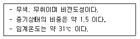
- 탄산수소나트륨
- 이산화탄소
- 할론 1301
- 황산알루미늄
(정답률: 80%)
28. 화학포소화기에서 중탄산나트륨과 황산알루미늄이 수용액이 반응할 때 생성되는 물질이 아닌 것은?
- 수산화알루미늄
- 이산화탄소
- 황산나트륨
- 인산암모늄
(정답률: 65%)
29. Halon 1211 인 물질의 분자식은?
- CF2Br2
- CF2ClBr
- CF3Br
- C2F4Br2
(정답률: 83%)
30. 가연성 물질이 공기 중에서 연소할 때의 연소형태에 대한 설명으로 틀린 것은?
- 공기와 접촉하는 표면에서 연소가 일어나는 것을 표면연소라 한다.
- 유황의 연소는 표면연소이다.
- 산소공급원을 가진 물질 자체가 연소하는 것을 자기연소라 한다.
- TNT의 연소는 자기연소이다.
(정답률: 78%)
31. 소화설비의 설치기준에 있어서 위험물저장소의 건축물로서 외벽이 내화구조로 된 것은 연면적 몇 m2 를 1소요단위로 하는가?
- 50
- 75
- 100
- 150
(정답률: 79%)
32. ABC급 분말소화 액체의 주성분은?
- 탄산수소나트륨
- 제1인산암모늄
- 인산칼륨
- 탄산수소칼륨
(정답률: 79%)
33. 할로겐화합물 소화약제가 전기화재에 사용될 수 있는 이유에 대한 다음 설명 중 가장 적합한 것은?
- 전기적으로 부도체이다.
- 액체의 유동성이 좋다.
- 탄산가스와 반응하여 포스겐가스를 만든다.
- 증기의 비중이 공기보다 작다.
(정답률: 78%)
34. 피리딘 40000 리터에 대한 소화설비의 소요단위는?
- 5 단위
- 10 단위
- 15 단위
- 100 단위
(정답률: 80%)
35. 옥내소화전설비에서 펌프를 이용한 가압송수장치의 전양정 H는 소정의 산식에 의한 수치 이상이어야 한다. 전양정 H를 구하는 식으로 옳은 것은? (단, h1은 소방용 호스의 마찰손실수두, h2 는 배관의 마찰손실수두, h3는 낙차이며, h1, h2, h3의 단위는 모두 m이다.)
- H =h1 + h2 + h3
- H =h1 + h2 + h3 + 0.35m
- H =h1 + h2 + h3 + 35m
- H =h1 + h2 + 0.35m
(정답률: 80%)
36. 옥내소화전설비의 기준에서 옥내소화전설비 비상전원의 용량은 옥내소화전설비를 유효하게 몇 분 이상 작동시킬 수 있어야 하는가?
- 15
- 30
- 45
- 60
(정답률: 78%)
37. 제4류 위험물의 탱크화재에서 발생되는 보일오버(boilover)에 대한 설명으로 가장 거리가 먼 것은?
- 원추형 탱크의 지붕판이 폭발에 의해 날아가고 화재가 확대될 때 저장된 연소 중인 기름에서 발생할 수 있는 현상이다.
- 화재가 지속된 부유식 탱크나 지붕과 측판을 약하게 결합한 구조의 기름 탱크에서도 일어난다.
- 원유, 중유 등을 저장하는 탱크에서 발생할 수 있다.
- 대량으로 증발된 가연성 액체가 갑자기 연소했을 때 커다란 구형의 불꽃을 발하는 것을 의미한다.
(정답률: 57%)
38. 소화기의 본체용기에 표시하여야 하는 사항이 아닌 것은?
- 제조회사 대표자명과 제조자명
- 총중량
- 취급상 주의사항
- 사용방법
(정답률: 86%)
39. 다음 중 소화설비와 능력단위 연결이 옳은 것은?
- 마른모래(삽 1개 포함) 50L - 0.5 능력단위
- 팽창질석(삽 1개 포함) 80L - 1.0 능력단위
- 소화전용물통 3L - 0.3 능력단위
- 수조(소화전용 물통 6개 포함) 190L - 1.5 능력단위
(정답률: 69%)
40. 화재 예방을 위하여 이황화탄소는 액면 자체 위에 물을 채워주는데 그 이유로 가장 타당한 것은?
- 공기와 접촉하면 불쾌한 냄새가 나기 때문에
- 발화점을 낮추기 위하여
- 불순물을 물에 용해시키기 위하여
- 가연성 증기의 발생을 방지하기 위하여
(정답률: 88%)
3과목: 위험물의 성질과 취급
41. 옥내저장창고의 바닥을 물이 스며나오거나 스며들지 아니하는 구조로 해야 하는 위험물은?
- 과염소산칼륨
- 니트로셀룰로오스
- 적린
- 트리에틸알루미늄
(정답률: 67%)
42. 염소산칼륨에 대한 설명 중 틀린 것은?
- 촉매없이 가열하면 약 400℃ 에서 분해한다.
- 열분해하여 산소를 방출한다.
- 불연성물질이다.
- 냉수, 알코올, 에테르에 잘 녹는다.
(정답률: 65%)
43. 위험물 제조소등의 안전거리의 단축기준과 관련해서 H ≤ pD2 + a 인 경우 방화상 유효한 담의 높이는 2m 이상으로 한다. 다음 중 a에 해당되는 것은?
- 인근 건축물의 높이(m)
- 제조소등의 외벽의 높이(m)
- 제조소등과 공작물과의 거리(m)
- 제조소등과 방화상 유효한 담과의 거리(m)
(정답률: 78%)
44. 아밀알코올에 대한 설명으로 틀린 것은?
- 8가지 이성체가 있다.
- 청색이고 무취의 액체이다.
- 분자량은 약 88.15 이다.
- 포화지방족 알코올이다.
(정답률: 63%)
45. 짚, 헝겊 등을 다음의 물질과 적셔서 대량으로 쌓아 두었을 경우 자연 발화의 위험성이 제일 높은 것은?
- 동유
- 야자유
- 올리브유
- 피마자유
(정답률: 75%)
46. 질산나트륨에 대한 안전조치 사항으로 틀린 것은?
- 가열하면 열분해하므로 주의한다.
- 충격, 마찰, 타격 등을 피한다.
- 유기물과의 혼합을 피한다.
- 화재발생시 주수소화는 금한다.
(정답률: 57%)
47. 다음 위험물의 유별 구분이 나머지 셋과 다른 하나는?
- 중크롬산나트륨
- 과염소산마그네슘
- 과염소산칼륨
- 과염소산
(정답률: 67%)
48. 제3류 위험물의 성질을 설명한 것으로 옳은 것은?
- 물에 의한 냉각소화를 모두 금지한다.
- 알킬알루미늄, 나트륨, 수소화나트륨은 비중은 모두 물보다 무겁다.
- 모두 무기화합물로 구성되어 있다.
- 지정수량은 모두 300kg 이하의 값을 갖는다.
(정답률: 55%)
49. 간이탱크저장소의 위치ㆍ구조 및 설비의 기준에서 간이저장탱크 1개의 용량은 몇 L 이하이어야 하는가?
- 300
- 600
- 1000
- 1200
(정답률: 71%)
50. 과산화수소의 성질에 대한 설명 중 틀린 것은?
- 에테르에 녹지 않으며, 벤젠에 녹는다.
- 산화제이지만 환원제로서 작용하는 경우도 있다.
- 물보다 무겁다.
- 분해방지 안정제로 인산, 요산 등을 사용할 수 있다.
(정답률: 66%)
51. [그림]과 같은 위험물을 저장하는 탱크의 내용적은 약 몇 m3 인가? (단, r은 10m, L은 25m 이다.)
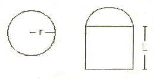
- 3612
- 4712
- 5812
- 7854
(정답률: 77%)
52. 위험물안전관리법령에서 정의한 제2석유류의 인화점 범위는 1기압에서 얼마인가?
- 21℃ 미만
- 21℃ 이상, 70℃ 미만
- 70℃ 이상, 200℃ 미만
- 200℃ 이상
(정답률: 83%)
53. 메틸에틸케톤에 대한 설명으로 옳은 것은?
- 물보다 무겁다.
- 증기는 공기보다 가볍다.
- 지정수량은 200L 이다.
- 물과 접촉하면 심하게 발열하므로 주수소화는 금한다.
(정답률: 40%)
54. 특정옥외저장탱크를 원통형으로 설치하고자 한다. 지반면으로부터의 높이가 16m 일 때 이 탱크가 받는 풍하중은 1m2 당 얼마 이상으로 계산하여야 하는가? (단, 강풍을 받을 우려가 있는 장소에 설치하는 경우는 제외한다.)
- 0.7640kN
- 1.2348kN
- 1.6464kN
- 2.348kN
(정답률: 63%)
55. 다음 중 가연성 물질이 아닌 것은?
- 수소화나트륨
- 황화린
- 과산화나트륨
- 적린
(정답률: 55%)
56. P4S7에 더운물을 가하면 분해된다. 이 때 주로 발생하는 유독물질의 명칭은?
- 아황산
- 황화수소
- 인화수소
- 오산화린
(정답률: 62%)
57. 과산화칼슘의 성질에 대한 설명으로 틀린 것은?
- 백색의 분말이다.
- 에테르에 용해되지 않는다.
- 염산과 반응하여 과산화수소를 발생한다.
- 가열하면 50℃ 이하에서 분해하여 산소를 발생하고 폭발한다.
(정답률: 38%)
58. 유기과산화물에 대한 설명으로 틀린 것은?
- 소화방법으로는 질식소화가 가장 효과적이다.
- 벤조일퍼옥사이드, 메틸에틸케톤퍼옥사이드 등이 있다.
- 저장시 고온체나 화기의 접근을 피한다.
- 지정수량은 10kg 이다.
(정답률: 62%)
59. 다음 위험물의 저장시 보호약으로 물을 사용하는 것이 적합하지 않은 것은?
- 황린
- 인화칼슘
- 이황화탄소
- 니트로셀룰로오스
(정답률: 73%)
60. 다음 중 위험물안전관리법령상 품명이 다른 하나는?
- 클로로벤젠
- 에틸렌글리콜
- 큐멘
- 벤즈알데히드
(정답률: 36%)